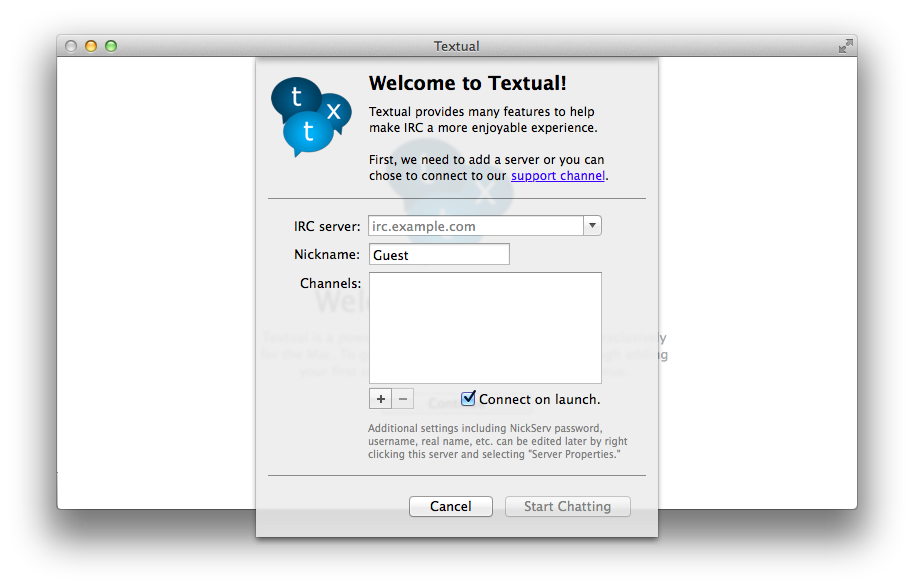
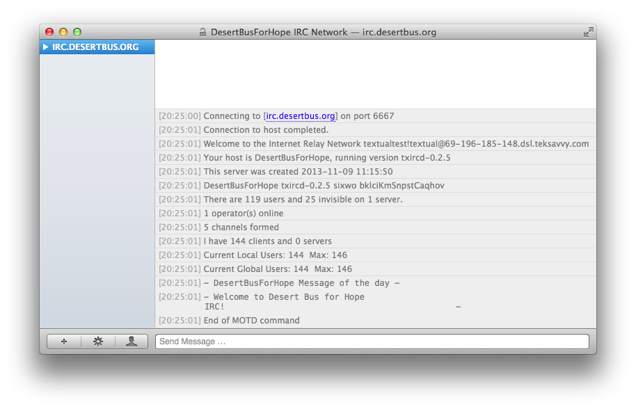
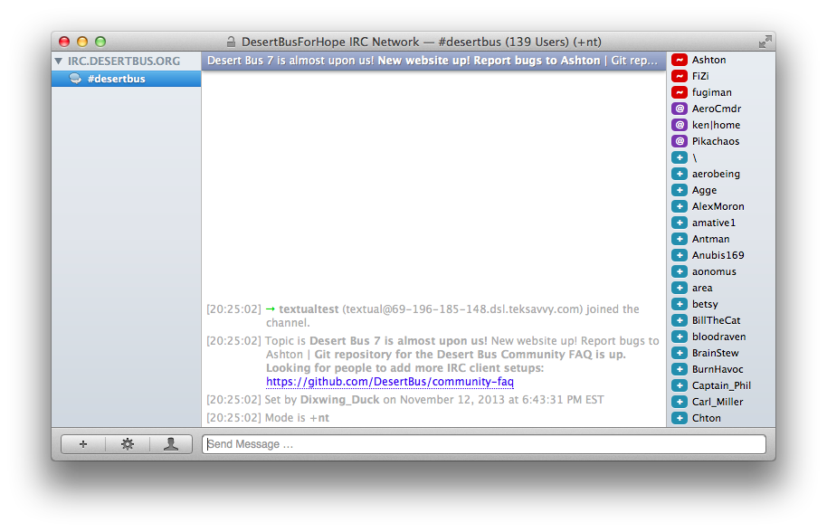
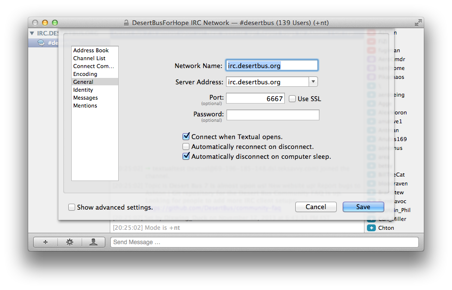
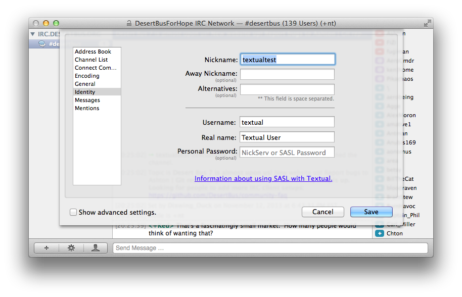
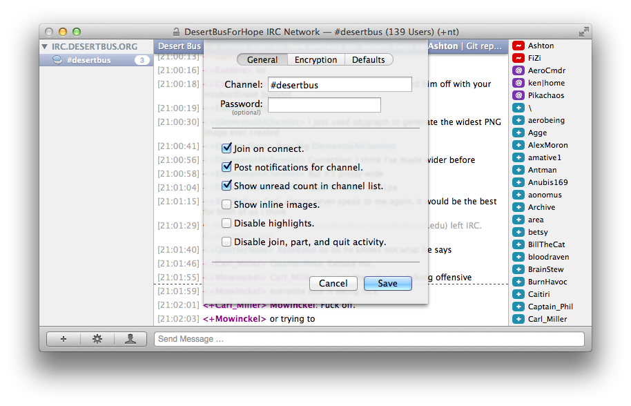

Textual is an IRC client for OS X which is simple and easy to use. You can purchase it from the App Store or download a trial from the developer's site. The current version at the moment of writing 3.2.3.
There are three ways to identify yourself to the Desert Bus Chat server: NickServ, server password, or SASL. In Textual's case, all three are about the same in terms of security*, but SASL is preferred, and is explained in Identifying Yourself. No matter which option you choose, you should also review Connecting Securely for instructions on using SSL to secure your connection.
* Normally SASL is more secure, but Textual only supports SASL PLAIN, which doesn't encrypt your data when you're sending it to the server. Make sure to connect using SSL if you're concerned about this. In the future Textual might support some form of encryption, in which case you'll already be set.
Textual is incredibly easy to get going. If you're a new user, when you first start Textual, it will prompt you to enter a new server to connect to.
IRC server: For the Desert Bus Chat, make sure this is set to irc.desertbus.org.
Nickname: Enter whatever name you'd like to use in the chat. If you have a donor account, you'll be able to reserve this name for later, and no one else will be able to use it when you disconnect.
Channels: You don't need to worry about this, because the Desert Bus IRC server will automatically connect you to the main room, #desertbus.
Connect on launch If you'd like to save yourself some time, and connect to the Desert Bus Chat whenever you start Textual, leave this option checked (it's on by default).
Once you've filled in all these fields, the Start Chatting button should become enabled, so go ahead and click that.
You should see Textual connect to the server. Once it's connected, click on the arrow next to the server's name in the sidebar to expand it. If everything went correctly, you should see #desertbus there.
If for some reason #desertbus isn't there, make sure you connected to the server successfully. If that's not the problem, just type /join #desertbus in the text box you see in the main window, then hit Return, and hopefully you'll be connected to the chat.
If you didn't choose to let Textual automatically connect when it launches, or you want to turn off the automatic connection, you can change the settings on the main configuration screen for the Desert Bus server. Simply check or uncheck Connect when Textual opens to change this option.
If you have a donor account, you can link your account with your nickname in chat. The preferred method for this is SASL, which is very easy to set up using Textual. Open the server configuration screen by hitting Cmd+U. Click on the Identity configuration item on the left, and fill in the box labelled Personal Password.
Your password for SASL is not just the password for your donor account, you also need to include the email address you used for the account. The format for the password is:
<email address> <password>
or
<email address>:<password>
with a colon. Once you hit save, re-connect to the Desert Bus server and you should automatically authenticate. This has the added benefit of saving your nickname so that others can't take it.
There are a lot of people in the Desert Bus Chat during the marathon, so there are also a lot of people joining and leaving. Normally you might want to know who just left the channel you're in, but it can quickly become overwhelming during Desert Bus.
To disable these message, you'll need to change the option in the channel configuration screen. To get there, click on #desertbus in the sidebar, then hit Cmd+I, or the gear icon in the lower left, then Channel Properties.
Once you've reached the options for the channel, the join/part messages can be easily disabled by checking Disable join, part, and quit activity and hitting Save.
Making Textual connect to the Desert Bus server with SSL is also very simple. Press Cmd+U to open the server configuration window, and you should automatically be focused on General configuration. To enable SSL, just check the Use SSL box next to Port and make sure to Save. Re-connect to the server and you should be using SSL automatically.